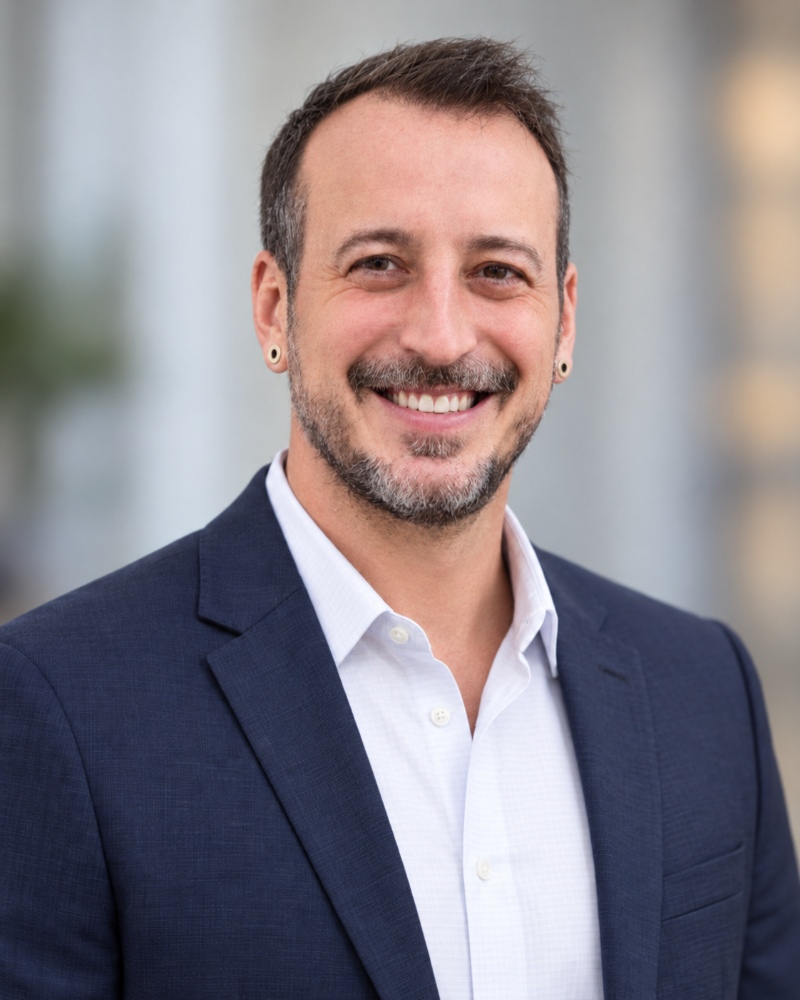

Professional work · Public demo
Safely SDK demo
A public booking demo featuring an embedded travel insurance SDK widget, from professional work at Safely.
Embedded SDK · Travel insurance
Explore the demoSenior software engineer · Design background
Matthew Williams brings 7+ years of production web development experience to the intersection of design and engineering. Clear interfaces, considered architecture, and a full-stack understanding of how products work. Current independent development includes React and TypeScript applications deployed on Vercel.

Experience & independent development
Experience spans Angular and TypeScript applications, Java/Spring Boot services, REST API integrations, and SQL and MongoDB data access.
Delivery and production experience covers AWS, Kubernetes, CircleCI, and ArgoCD, from implementation and debugging through release and ongoing support.
A current independent project built with React, TypeScript, and Vite, deployed on Vercel. Work includes typed league models, derived statistics, accessible interactions, and responsive light and dark themes.
Supabase and PostgreSQL are planned for league-data persistence in a future milestone.
Professional source code lives in private company repositories. The public Safely demo and independent projects offer examples to explore.
Angular · TypeScript · JavaScript · React
Java · Spring Boot · REST APIs · SQL · MongoDB
AWS · Kubernetes · CI/CD · Production support
Vercel · Independent project deployment
Selected work
Professional work · Public demo
A public booking demo featuring an embedded travel insurance SDK widget, from professional work at Safely.
Embedded SDK · Travel insurance
Explore the demoPersonal project · In development
A fantasy football dashboard bringing standings, team records, and league achievements into one responsive interface.
React · TypeScript · Vite · Vercel
Explore the appA background in graphic and multimedia design informs the approach: clear communication, intuitive interactions, and details that make a product feel considered.
Get in touch